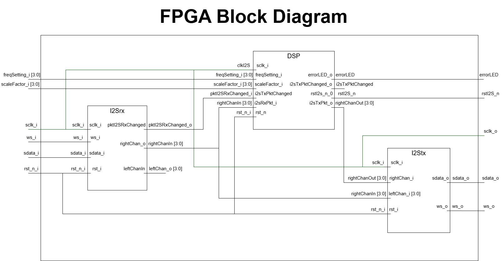

FPGA
Top Internal Modules
I2S rx Module
This module is responsible for recieving the I2S data from the MCU and converting it into a 16 bit package for the Left and Right channel. This module is mainly a large shifter that shifts the data in and latches the channel values as described by the I2S module, describe in more detail under the documentation tab. This module uses the sclk input as a clock signal to drive the seqquential logic. It wasn’t until later that the team realized this might not have been standard practice and could lead to digital noise.
DSP Module
This module accepts the incoming packet from the I2S rx module and syncronizes it to the faster FPGA clock. This module computes the modified packet (wet packet) and mixes it back with the original input (dry packet) to create the mixed packet. Special consideration needs to be taken to crossing clock domains since the FPGA system clock is around 6MHz while the sclk signal from the I2S module is 1.411 MHz leading to metastability issues and corruption if transfered without care.
I2S tx Module
This module accepts the mixed packet from the DSP module packet. The tx module while it is a transmitter is configured as a target since it does not generate its own word select (ws). Instead this module uses the ws signal from the controller, the MCU. This ensures that there is no clock drift between the I2S rx and tx module. This module latches a packet one cycle before the tx module finishes sending out the previous packet and then uses a shift register to serialize the captured data out onto an I2S busline along with the forwarded ws and sclk. The output of the I2S tx module is fed into the DAC.
Top Module Block Diagram

DSP Internal Modules
CDC FIFO STF and FTS Modules
The DSP module needs to handle asyncronous clock domain crossing (CDC). There is a slow to fast (STF) transfer from the I2S rx module to the DSP module shown in Figure 2. There is also a fast to slow (FTS) transfer. These transactions are handled by an the CDC FIFO STF and CDC FIFO FTS which are IP modules provided by Lattice Radiant, our IDE of choice for the FPGA.
LFO Gen Module
The chorus effect oscilates the amount of delay on a low frequency wave. The LFO gen module generates a low frequency sine wave with a tunable frequency between 0.1-5Hz and a scale between 0-4410. The scale of the sign wave represents the amount of delay ticks to delay the main signal by. Each delay tick is a previous sample (1/(44.1kHs)) seconds ago. The LFO gen is implemented with a look up table (LUT) of sine wave values to expedite processing time and to reduce redundant computations while running.
Delay Buffer FSM Module
A configurable-depth circular delay buffer (FIFO) using an iCE40 SPRAM primitive, operating under a Finite State Machine (FSM) control. It provides a variable delay path for input data packets, designed for audio DSP applications like chorus in our example. The total delay is calculated as the sum of a fixed average delay and a variable offset provided by an external source (e.g., an LFO).The FSM ensures proper read-after-write control and address management to avoid data corruption.
Mixer Module
This module mixes both the wet packet (modified data) and dry packet (unmodified data) by 50%. It accomplishes this by dividing each packet by 2 and then adding the results together. This packet is outputted to the I2S tx module to be sent to the DAC.
DSP Module Block Diagram